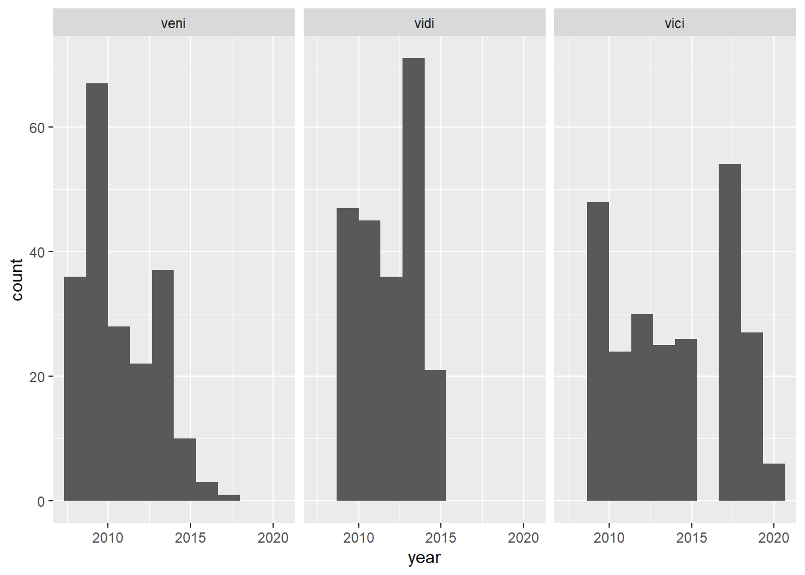

In this script, we tidy up the grant information on Veni/Vidi/Vici
grants parsed from the NWO website, and match the grant recipients with
professors in our data.
Load the libraries that we need:
library(groundhog)
packages_to_load <- c("readr", "dplyr",
"stringr", "ggplot2")
groundhog.library(packages_to_load, date = "2023-12-01")
Parse NWO Veni, Vidi,
Vici grant information
Read in the data about grant awards:
professor_grant_awards <- read_csv("../dutch_media_profs_python/output-data/professor_grant_awards.csv")[, -1]
# deduplicate
professor_grant_awards$duplicates <- duplicated(professor_grant_awards)
professor_grant_awards <- filter(professor_grant_awards,
duplicates == FALSE)
# remove the duplicatees indicator column
professor_grant_awards <- professor_grant_awards[, -ncol(professor_grant_awards)]
Now, we want to extract professor names from here. The easiest way is
using the gender in the brackets of awardees, which we can replace by an
easy token indicating splits:
# introduce an easy "splitting" token instead of gender notions
professor_grant_awards$name_extract <- professor_grant_awards$professor
professor_grant_awards$name_extract <- str_replace(professor_grant_awards$name_extract, "\\(m\\)",
"(*)")
professor_grant_awards$name_extract <- str_replace(professor_grant_awards$name_extract, "\\(v\\)",
"(*)")
professor_grant_awards$name_extract <- str_replace(professor_grant_awards$name_extract, "\\(f\\)",
"(*)")
# if there is no (*) identified, replace the first comma
professor_grant_awards$name_extract <- ifelse(str_detect(professor_grant_awards$name_extract, "\\(\\*\\)" ) == TRUE,
professor_grant_awards$name_extract,
str_replace(professor_grant_awards$name_extract, "\\,", " (*),")
)
# if still none, replace the first -
professor_grant_awards$name_extract <- ifelse(str_detect(professor_grant_awards$name_extract, "\\(\\*\\)" ) == TRUE,
professor_grant_awards$name_extract,
str_replace(professor_grant_awards$name_extract, "\\b \\– \\b", " (*),")
)
# extract only the part before the gender notion
professor_grant_awards$name_extracted <- str_split_i(professor_grant_awards$name_extract, "\\(\\*\\)", 1)
# remove the titles
titles_to_remove <- "\\b(Prof dr. ir. |Prof. dr. |Dr. ir.|Prof. |Dr. |ir. |Ph.D. |PhD | PhD|Dr.ing. |dr.|Dr.|Drs. |ing. |Ir.|ir.|Ing.|Prof.dr|mr.|Ir. |Prof.|ir ing.)\\b"
professor_grant_awards$name_extracted <- str_remove_all(professor_grant_awards$name_extracted, titles_to_remove)
# remove that one professor's birth date that lingers, and some institutions that also linger
remove_rest <- paste(c("- Amsterdam UMC", "27-03-1977", "EUR MC - Neurosciences", "UU - Nanomaterial Science",
"- Hubrecht Institute", " - UMCG- Psychiatry", " - VU - Dept. of Functional Genomics", "\\(m0",
" - AMC - Rheumatology and clinical immunology"), collapse = "|")
professor_grant_awards$name_extracted <- str_remove_all(professor_grant_awards$name_extracted, remove_rest)
# clear the leading/trailing whitespaces
professor_grant_awards$name_extracted <- trimws(professor_grant_awards$name_extracted)
Clean this up a bit, removing empty rows and some misspecified
lines:
professor_grant_awards_clean <- filter(professor_grant_awards,
name_extracted != "")
# count words and remove those with less than 1 and more than 5
professor_grant_awards_clean$words <- str_count(professor_grant_awards_clean$name_extracted, " ")
professor_grant_awards_clean <- filter(professor_grant_awards_clean,
words > 0 & words < 6)
# delete any that contain institution/paper mentions
professor_grant_awards_clean$institution_paper <- str_detect(professor_grant_awards_clean$name_extracted,
"\\b(Leiden|Criminal|Semantics|wortelinteracties|Radboudumc|Institute|Department|Sciences|University|Erasmus|Faculty|
strategy|Imaging|E.coli|E. coli|Embodied|Escherichia coli|governance|tuberculosis|Research|This Vici was awarded|economic|horse|center|centrum)\\b")
professor_grant_awards_clean <- filter(professor_grant_awards_clean,
institution_paper == FALSE)
# remove solitary dots at the beginning of the string
professor_grant_awards_clean$name_extracted <- str_replace(professor_grant_awards_clean$name_extracted, '^\\.', '')
# remove commas that made it in
professor_grant_awards_clean$name_extracted <- str_replace_all(professor_grant_awards_clean$name_extracted, ',', '')
# tidy up the dataframe
professor_grant_awards_clean <- professor_grant_awards_clean[c("professor", "grant", "year", "name_extracted")]
# still need to remove some titles
professor_grant_awards_clean$name_extracted <- str_remove(professor_grant_awards_clean$name_extracted, "Dr.|Mr. dr.|dr.|Ing.|Prof.|mr.")
# trim whitespaces again
professor_grant_awards_clean$name_extracted <- trimws(professor_grant_awards_clean$name_extracted)
Extract first and last names, as well as their initials:
# are there any brackets surrounding the first name?
professor_grant_awards_clean$first_tf <- str_detect(professor_grant_awards_clean$name_extracted,
"\\(")
# get the name within brackets
professor_grant_awards_clean$first <- gsub("(?<=\\()[^()]*(?=\\))(*SKIP)(*F)|.",
"",
professor_grant_awards_clean$name_extracted,
perl=T)
# there are only a few people without names in brackets whose first names are mentioned
#let us manually replace their first name fields:
professor_grant_awards_clean$first <- ifelse(professor_grant_awards_clean$name_extracted == "A.V. Artem Belopolsky",
"Artem",
ifelse(professor_grant_awards_clean$name_extracted == "E. Enrique Jimenez-Melero",
"Enrique",
ifelse(professor_grant_awards_clean$name_extracted =="W. Willem Schinkel",
"Willem",
ifelse(professor_grant_awards_clean$name_extracted =="E.W. [Elmar] Tobi",
"Elmar", professor_grant_awards_clean$first))))
# initials are before the first name in brackets, or before the space if no first name
professor_grant_awards_clean$initials <- ifelse(professor_grant_awards_clean$first_tf == TRUE,
str_split_i(professor_grant_awards_clean$name_extracted,
"\\(",
1),
str_split_i(professor_grant_awards_clean$name_extracted,
" ",
1))
# last name is after the bracket, or the last element if splitting by the dots in initials
professor_grant_awards_clean$last <- ifelse(professor_grant_awards_clean$first_tf == TRUE,
str_split_i(professor_grant_awards_clean$name_extracted,
"\\)",
2),
NA)
# if none, then split by the dot and take the last element
professor_grant_awards_clean$last <- ifelse(professor_grant_awards_clean$first_tf == FALSE,
str_split_i(professor_grant_awards_clean$name_extracted,
"\\. ",
length(str_split(professor_grant_awards_clean$name_extracted,
"\\. ")[[1]])),
professor_grant_awards_clean$last)
# only one professor without the last name left, manually adjust:
professor_grant_awards_clean$last <- ifelse(professor_grant_awards_clean$name_extracted == "Roseriet Beijers",
"Beijers",
professor_grant_awards_clean$last)
professor_grant_awards_clean$first <- ifelse(professor_grant_awards_clean$name_extracted == "Roseriet Beijers",
"Roseriet",
professor_grant_awards_clean$first)
professor_grant_awards_clean$initials <- ifelse(professor_grant_awards_clean$name_extracted == "Roseriet Beijers",
"R",
professor_grant_awards_clean$initials)
# and a few more for manual adjustment
professor_grant_awards_clean$last <- ifelse(professor_grant_awards_clean$name_extracted == "A.V. Artem Belopolsky",
"Belopolsky",
ifelse(professor_grant_awards_clean$name_extracted == "E. Enrique Jimenez-Melero",
"Jimenez-Melero",
ifelse(professor_grant_awards_clean$name_extracted =="W. Willem Schinkel",
"Schinkel",
ifelse(professor_grant_awards_clean$name_extracted =="E.W. [Elmar] Tobi",
"Tobi", professor_grant_awards_clean$last))))
# tidy up trailing white spaces
professor_grant_awards_clean$first <- trimws(professor_grant_awards_clean$first)
professor_grant_awards_clean$initials <- trimws(professor_grant_awards_clean$initials)
professor_grant_awards_clean$last <- trimws(professor_grant_awards_clean$last)
Now, clean up the data frame further:
# rearrange
professor_grant_awards_final <- professor_grant_awards_clean[c("grant", "year", "first", "initials", "last", "professor")]
colnames(professor_grant_awards_final)[ncol(professor_grant_awards_final)] <- "full_string"
# delete any outstanding duplicates
professor_grant_awards_final$duplicate <- duplicated(professor_grant_awards_final[, c("grant", "year", "first", "initials", "last")])
professor_grant_awards_final <- filter(professor_grant_awards_final,
duplicate == FALSE)
# delete the duplicate column
professor_grant_awards_final <- professor_grant_awards_final[, -c(ncol(professor_grant_awards_final))]
# drop any redundant objects from memory
rm(professor_grant_awards)
rm(professor_grant_awards_clean)
Match grant information
to professors
Load the professor profiles:
load("raw_data/media_profs_profiles.rda")
profs <- read_csv("raw_data/dutch_profs_urls.csv")
# merge the profs with their ORCIDs
colnames(profs)[c(1,7)] <- c("id", "profile_id")
profs_full <- merge(profs,
metadf[, c(1:4, 361)],
by = "profile_id")
Match by first and last names:
professor_grant_match <- professor_grant_awards_final
professor_grant_match$both_match <- ifelse(((tolower(professor_grant_match$last) %in% profs_full$last) & (tolower(professor_grant_match$first) %in% profs_full$first)),
TRUE,
FALSE)
Filter only grants awarded to our profs:
professor_grant_awards_narcis <- filter(professor_grant_match,
both_match == TRUE)
Get the exact matching:
professor_grant_awards_narcis$first_last <- tolower(paste(professor_grant_awards_narcis$first,
professor_grant_awards_narcis$last))
profs_full$first_last <- tolower(paste(profs_full$first, profs_full$last))
professor_grant_awards_narcis_match <- merge(professor_grant_awards_narcis,
profs_full[, c("profile_id", "first_last")],
by = "first_last")
Select the relevant columns:
professor_grant_awards_narcis_final <- professor_grant_awards_narcis_match[, c("grant",
"year",
"profile_id")]
Write this out:
saveRDS(professor_grant_awards_narcis_final, "processed_data/nwo_grants.RDS")
Plots
And add histograms of tupes of awards and years:
professor_grant_awards_narcis_final$grant <- factor(professor_grant_awards_narcis_final$grant, levels = c("veni",
"vidi",
"vici"))
ggplot(professor_grant_awards_narcis_final, aes(x = year)) +
geom_histogram(bins = 10) +
facet_wrap(~ grant)

LS0tDQp0aXRsZTogIkdyYW50X3BhcnNpbmciDQphdXRob3I6ICJBbmEgTWFjYW5vdmljIg0KZGF0ZTogIjIwMjMtMTItMjAiDQotLS0NCg0KSW4gdGhpcyBzY3JpcHQsIHdlIHRpZHkgdXAgdGhlIGdyYW50IGluZm9ybWF0aW9uIG9uIFZlbmkvVmlkaS9WaWNpIGdyYW50cyBwYXJzZWQNCmZyb20gdGhlIE5XTyB3ZWJzaXRlLCBhbmQgbWF0Y2ggdGhlIGdyYW50IHJlY2lwaWVudHMgd2l0aCBwcm9mZXNzb3JzIGluIG91ciBkYXRhLg0KDQpgYGB7ciBpbmNsdWRlID0gRn0NCmtuaXRyOjpvcHRzX2NodW5rJHNldChlY2hvID0gVFJVRSkNCmtuaXRyOjpvcHRzX2NodW5rJHNldCh3YXJuaW5nID0gRkFMU0UpDQprbml0cjo6b3B0c19jaHVuayRzZXQobWVzc2FnZSA9IEZBTFNFKQ0KYGBgDQoNCkxvYWQgdGhlIGxpYnJhcmllcyB0aGF0IHdlIG5lZWQ6DQpgYGB7ciB3YXJuaW5nID0gRiwgbWVzc2FnZSA9IEZ9DQpsaWJyYXJ5KGdyb3VuZGhvZykNCnBhY2thZ2VzX3RvX2xvYWQgPC0gYygicmVhZHIiLCAiZHBseXIiLCANCiAgICAgICAgICAgICAgICAgICAgICAic3RyaW5nciIsICJnZ3Bsb3QyIikNCmdyb3VuZGhvZy5saWJyYXJ5KHBhY2thZ2VzX3RvX2xvYWQsIGRhdGUgPSAiMjAyMy0xMi0wMSIpDQpgYGANCg0KDQojIFBhcnNlIE5XTyBWZW5pLCBWaWRpLCBWaWNpIGdyYW50IGluZm9ybWF0aW9uDQoNClJlYWQgaW4gdGhlIGRhdGEgYWJvdXQgZ3JhbnQgYXdhcmRzOg0KYGBge3Igd2FybmluZyA9IEYsIG1lc3NhZ2UgPSBGfQ0KcHJvZmVzc29yX2dyYW50X2F3YXJkcyA8LSByZWFkX2NzdigiLi4vZHV0Y2hfbWVkaWFfcHJvZnNfcHl0aG9uL291dHB1dC1kYXRhL3Byb2Zlc3Nvcl9ncmFudF9hd2FyZHMuY3N2IilbLCAtMV0NCg0KIyBkZWR1cGxpY2F0ZQ0KcHJvZmVzc29yX2dyYW50X2F3YXJkcyRkdXBsaWNhdGVzIDwtIGR1cGxpY2F0ZWQocHJvZmVzc29yX2dyYW50X2F3YXJkcykNCnByb2Zlc3Nvcl9ncmFudF9hd2FyZHMgPC0gZmlsdGVyKHByb2Zlc3Nvcl9ncmFudF9hd2FyZHMsDQogICAgICAgICAgICAgICAgICAgICAgICAgICAgICAgICBkdXBsaWNhdGVzID09IEZBTFNFKQ0KDQojIHJlbW92ZSB0aGUgZHVwbGljYXRlZXMgaW5kaWNhdG9yIGNvbHVtbg0KcHJvZmVzc29yX2dyYW50X2F3YXJkcyA8LSBwcm9mZXNzb3JfZ3JhbnRfYXdhcmRzWywgLW5jb2wocHJvZmVzc29yX2dyYW50X2F3YXJkcyldDQpgYGANCg0KTm93LCB3ZSB3YW50IHRvIGV4dHJhY3QgcHJvZmVzc29yIG5hbWVzIGZyb20gaGVyZS4gDQpUaGUgZWFzaWVzdCB3YXkgaXMgdXNpbmcgdGhlIGdlbmRlciBpbiB0aGUgYnJhY2tldHMgb2YgYXdhcmRlZXMsIHdoaWNoIHdlIGNhbiANCnJlcGxhY2UgYnkgYW4gZWFzeSB0b2tlbiBpbmRpY2F0aW5nIHNwbGl0czoNCmBgYHtyfQ0KIyBpbnRyb2R1Y2UgYW4gZWFzeSAic3BsaXR0aW5nIiB0b2tlbiBpbnN0ZWFkIG9mIGdlbmRlciBub3Rpb25zDQpwcm9mZXNzb3JfZ3JhbnRfYXdhcmRzJG5hbWVfZXh0cmFjdCA8LSBwcm9mZXNzb3JfZ3JhbnRfYXdhcmRzJHByb2Zlc3Nvcg0KcHJvZmVzc29yX2dyYW50X2F3YXJkcyRuYW1lX2V4dHJhY3QgPC0gc3RyX3JlcGxhY2UocHJvZmVzc29yX2dyYW50X2F3YXJkcyRuYW1lX2V4dHJhY3QsICJcXChtXFwpIiwNCiAgICAgICAgICAgICAgICAgICAgICAgICAgICAgICAgICAgICAgICAgICAgICAgICAgICIoKikiKQ0KcHJvZmVzc29yX2dyYW50X2F3YXJkcyRuYW1lX2V4dHJhY3QgPC0gc3RyX3JlcGxhY2UocHJvZmVzc29yX2dyYW50X2F3YXJkcyRuYW1lX2V4dHJhY3QsICJcXCh2XFwpIiwNCiAgICAgICAgICAgICAgICAgICAgICAgICAgICAgICAgICAgICAgICAgICAgICAgICAgICIoKikiKQ0KcHJvZmVzc29yX2dyYW50X2F3YXJkcyRuYW1lX2V4dHJhY3QgPC0gc3RyX3JlcGxhY2UocHJvZmVzc29yX2dyYW50X2F3YXJkcyRuYW1lX2V4dHJhY3QsICJcXChmXFwpIiwNCiAgICAgICAgICAgICAgICAgICAgICAgICAgICAgICAgICAgICAgICAgICAgICAgICAgICIoKikiKQ0KDQojIGlmIHRoZXJlIGlzIG5vICgqKSBpZGVudGlmaWVkLCByZXBsYWNlIHRoZSBmaXJzdCBjb21tYQ0KcHJvZmVzc29yX2dyYW50X2F3YXJkcyRuYW1lX2V4dHJhY3QgPC0gaWZlbHNlKHN0cl9kZXRlY3QocHJvZmVzc29yX2dyYW50X2F3YXJkcyRuYW1lX2V4dHJhY3QsICJcXChcXCpcXCkiICkgPT0gVFJVRSwNCiAgICAgICAgICAgICAgICAgICAgICAgICAgICAgICAgICAgICAgICAgICAgICBwcm9mZXNzb3JfZ3JhbnRfYXdhcmRzJG5hbWVfZXh0cmFjdCwNCiAgICAgICAgICAgICAgICAgICAgICAgICAgICAgICAgICAgICAgICAgICAgICBzdHJfcmVwbGFjZShwcm9mZXNzb3JfZ3JhbnRfYXdhcmRzJG5hbWVfZXh0cmFjdCwgIlxcLCIsICIgKCopLCIpDQogICAgICAgICAgICAgICAgICAgICAgICAgICAgICAgICAgICAgICAgICAgICAgKQ0KIyBpZiBzdGlsbCBub25lLCByZXBsYWNlIHRoZSBmaXJzdCAtDQpwcm9mZXNzb3JfZ3JhbnRfYXdhcmRzJG5hbWVfZXh0cmFjdCA8LSBpZmVsc2Uoc3RyX2RldGVjdChwcm9mZXNzb3JfZ3JhbnRfYXdhcmRzJG5hbWVfZXh0cmFjdCwgIlxcKFxcKlxcKSIgKSA9PSBUUlVFLA0KICAgICAgICAgICAgICAgICAgICAgICAgICAgICAgICAgICAgICAgICAgICAgIHByb2Zlc3Nvcl9ncmFudF9hd2FyZHMkbmFtZV9leHRyYWN0LA0KICAgICAgICAgICAgICAgICAgICAgICAgICAgICAgICAgICAgICAgICAgICAgIHN0cl9yZXBsYWNlKHByb2Zlc3Nvcl9ncmFudF9hd2FyZHMkbmFtZV9leHRyYWN0LCAiXFxiIFxc4oCTIFxcYiIsICIgKCopLCIpDQogICAgICAgICAgICAgICAgICAgICAgICAgICAgICAgICAgICAgICAgICAgICAgKQ0KDQojIGV4dHJhY3Qgb25seSB0aGUgcGFydCBiZWZvcmUgdGhlIGdlbmRlciBub3Rpb24NCnByb2Zlc3Nvcl9ncmFudF9hd2FyZHMkbmFtZV9leHRyYWN0ZWQgPC0gc3RyX3NwbGl0X2kocHJvZmVzc29yX2dyYW50X2F3YXJkcyRuYW1lX2V4dHJhY3QsICJcXChcXCpcXCkiLCAxKQ0KDQojIHJlbW92ZSB0aGUgdGl0bGVzDQp0aXRsZXNfdG9fcmVtb3ZlIDwtICJcXGIoUHJvZiBkci4gaXIuIHxQcm9mLiBkci4gfERyLiBpci58UHJvZi4gfERyLiB8aXIuIHxQaC5ELiB8UGhEIHwgUGhEfERyLmluZy4gfGRyLnxEci58RHJzLiB8aW5nLiB8SXIufGlyLnxJbmcufFByb2YuZHJ8bXIufElyLiB8UHJvZi58aXIgaW5nLilcXGIiDQpwcm9mZXNzb3JfZ3JhbnRfYXdhcmRzJG5hbWVfZXh0cmFjdGVkIDwtIHN0cl9yZW1vdmVfYWxsKHByb2Zlc3Nvcl9ncmFudF9hd2FyZHMkbmFtZV9leHRyYWN0ZWQsIHRpdGxlc190b19yZW1vdmUpDQoNCiMgcmVtb3ZlIHRoYXQgb25lIHByb2Zlc3NvcidzIGJpcnRoIGRhdGUgdGhhdCBsaW5nZXJzLCBhbmQgc29tZSBpbnN0aXR1dGlvbnMgdGhhdCBhbHNvIGxpbmdlcg0KcmVtb3ZlX3Jlc3QgPC0gcGFzdGUoYygiLSBBbXN0ZXJkYW0gVU1DIiwgIjI3LTAzLTE5NzciLCAgIkVVUiBNQyAtIE5ldXJvc2NpZW5jZXMiLCAiVVUgLSBOYW5vbWF0ZXJpYWwgU2NpZW5jZSIsDQogICAgICAgICAgICAgICAgICItIEh1YnJlY2h0IEluc3RpdHV0ZSIsICIgLSBVTUNHLSBQc3ljaGlhdHJ5IiwgIiAtIFZVIC0gRGVwdC4gb2YgRnVuY3Rpb25hbCBHZW5vbWljcyIsICJcXChtMCIsDQogICAgICAgICAgICAgICAgICIgLSBBTUMgLSBSaGV1bWF0b2xvZ3kgYW5kIGNsaW5pY2FsIGltbXVub2xvZ3kiKSwgY29sbGFwc2UgPSAifCIpDQpwcm9mZXNzb3JfZ3JhbnRfYXdhcmRzJG5hbWVfZXh0cmFjdGVkIDwtIHN0cl9yZW1vdmVfYWxsKHByb2Zlc3Nvcl9ncmFudF9hd2FyZHMkbmFtZV9leHRyYWN0ZWQsIHJlbW92ZV9yZXN0KQ0KDQoNCg0KIyBjbGVhciB0aGUgbGVhZGluZy90cmFpbGluZyB3aGl0ZXNwYWNlcw0KcHJvZmVzc29yX2dyYW50X2F3YXJkcyRuYW1lX2V4dHJhY3RlZCA8LSB0cmltd3MocHJvZmVzc29yX2dyYW50X2F3YXJkcyRuYW1lX2V4dHJhY3RlZCkNCmBgYA0KDQpDbGVhbiB0aGlzIHVwIGEgYml0LCByZW1vdmluZyBlbXB0eSByb3dzIGFuZCBzb21lIG1pc3NwZWNpZmllZCBsaW5lczoNCmBgYHtyfQ0KcHJvZmVzc29yX2dyYW50X2F3YXJkc19jbGVhbiA8LSBmaWx0ZXIocHJvZmVzc29yX2dyYW50X2F3YXJkcywNCiAgICAgICAgICAgICAgICAgICAgICAgICAgICAgICAgICAgICAgIG5hbWVfZXh0cmFjdGVkICE9ICIiKQ0KDQojIGNvdW50IHdvcmRzIGFuZCByZW1vdmUgdGhvc2Ugd2l0aCBsZXNzIHRoYW4gMSBhbmQgbW9yZSB0aGFuIDUNCnByb2Zlc3Nvcl9ncmFudF9hd2FyZHNfY2xlYW4kd29yZHMgPC0gc3RyX2NvdW50KHByb2Zlc3Nvcl9ncmFudF9hd2FyZHNfY2xlYW4kbmFtZV9leHRyYWN0ZWQsICIgIikNCnByb2Zlc3Nvcl9ncmFudF9hd2FyZHNfY2xlYW4gPC0gZmlsdGVyKHByb2Zlc3Nvcl9ncmFudF9hd2FyZHNfY2xlYW4sDQogICAgICAgICAgICAgICAgICAgICAgICAgICAgICAgICAgICAgICB3b3JkcyA+IDAgJiB3b3JkcyA8IDYpDQoNCiMgZGVsZXRlIGFueSB0aGF0IGNvbnRhaW4gaW5zdGl0dXRpb24vcGFwZXIgbWVudGlvbnMNCnByb2Zlc3Nvcl9ncmFudF9hd2FyZHNfY2xlYW4kaW5zdGl0dXRpb25fcGFwZXIgPC0gc3RyX2RldGVjdChwcm9mZXNzb3JfZ3JhbnRfYXdhcmRzX2NsZWFuJG5hbWVfZXh0cmFjdGVkLA0KICAgICAgICAgICAgICAgICAgICAgICAgICAgICAgICAgICAgICAgICAgICAgICAgICAgICAgICAgICAgICJcXGIoTGVpZGVufENyaW1pbmFsfFNlbWFudGljc3x3b3J0ZWxpbnRlcmFjdGllc3xSYWRib3VkdW1jfEluc3RpdHV0ZXxEZXBhcnRtZW50fFNjaWVuY2VzfFVuaXZlcnNpdHl8RXJhc211c3xGYWN1bHR5fA0KICAgICAgICAgICAgICAgICAgICAgICAgICAgICAgICAgICAgICAgICAgICAgICAgICAgICAgICAgICAgIHN0cmF0ZWd5fEltYWdpbmd8RS5jb2xpfEUuIGNvbGl8RW1ib2RpZWR8RXNjaGVyaWNoaWEgY29saXxnb3Zlcm5hbmNlfHR1YmVyY3Vsb3Npc3xSZXNlYXJjaHxUaGlzIFZpY2kgd2FzIGF3YXJkZWR8ZWNvbm9taWN8aG9yc2V8Y2VudGVyfGNlbnRydW0pXFxiIikNCg0KcHJvZmVzc29yX2dyYW50X2F3YXJkc19jbGVhbiA8LSBmaWx0ZXIocHJvZmVzc29yX2dyYW50X2F3YXJkc19jbGVhbiwNCiAgICAgICAgICAgICAgICAgICAgICAgICAgICAgICAgICAgICAgIGluc3RpdHV0aW9uX3BhcGVyID09IEZBTFNFKQ0KDQojIHJlbW92ZSBzb2xpdGFyeSBkb3RzIGF0IHRoZSBiZWdpbm5pbmcgb2YgdGhlIHN0cmluZw0KcHJvZmVzc29yX2dyYW50X2F3YXJkc19jbGVhbiRuYW1lX2V4dHJhY3RlZCA8LSBzdHJfcmVwbGFjZShwcm9mZXNzb3JfZ3JhbnRfYXdhcmRzX2NsZWFuJG5hbWVfZXh0cmFjdGVkLCAnXlxcLicsICcnKQ0KDQojIHJlbW92ZSBjb21tYXMgdGhhdCBtYWRlIGl0IGluDQpwcm9mZXNzb3JfZ3JhbnRfYXdhcmRzX2NsZWFuJG5hbWVfZXh0cmFjdGVkIDwtIHN0cl9yZXBsYWNlX2FsbChwcm9mZXNzb3JfZ3JhbnRfYXdhcmRzX2NsZWFuJG5hbWVfZXh0cmFjdGVkLCAnLCcsICcnKQ0KDQojIHRpZHkgdXAgdGhlIGRhdGFmcmFtZQ0KcHJvZmVzc29yX2dyYW50X2F3YXJkc19jbGVhbiA8LSBwcm9mZXNzb3JfZ3JhbnRfYXdhcmRzX2NsZWFuW2MoInByb2Zlc3NvciIsICJncmFudCIsICJ5ZWFyIiwgIm5hbWVfZXh0cmFjdGVkIildDQoNCiMgc3RpbGwgbmVlZCB0byByZW1vdmUgc29tZSB0aXRsZXMNCnByb2Zlc3Nvcl9ncmFudF9hd2FyZHNfY2xlYW4kbmFtZV9leHRyYWN0ZWQgPC0gc3RyX3JlbW92ZShwcm9mZXNzb3JfZ3JhbnRfYXdhcmRzX2NsZWFuJG5hbWVfZXh0cmFjdGVkLCAiRHIufE1yLiBkci58ZHIufEluZy58UHJvZi58bXIuIikNCg0KIyB0cmltIHdoaXRlc3BhY2VzIGFnYWluDQpwcm9mZXNzb3JfZ3JhbnRfYXdhcmRzX2NsZWFuJG5hbWVfZXh0cmFjdGVkIDwtIHRyaW13cyhwcm9mZXNzb3JfZ3JhbnRfYXdhcmRzX2NsZWFuJG5hbWVfZXh0cmFjdGVkKQ0KYGBgDQoNCkV4dHJhY3QgZmlyc3QgYW5kIGxhc3QgbmFtZXMsIGFzIHdlbGwgYXMgdGhlaXIgaW5pdGlhbHM6DQpgYGB7cn0NCiMgYXJlIHRoZXJlIGFueSBicmFja2V0cyBzdXJyb3VuZGluZyB0aGUgZmlyc3QgbmFtZT8NCnByb2Zlc3Nvcl9ncmFudF9hd2FyZHNfY2xlYW4kZmlyc3RfdGYgPC0gc3RyX2RldGVjdChwcm9mZXNzb3JfZ3JhbnRfYXdhcmRzX2NsZWFuJG5hbWVfZXh0cmFjdGVkLCANCiAgICAgICAgICAgICAgICAgICAgICAgICAgICAgICAgICAgICAgICAgICAgICAgICAgICAiXFwoIikNCg0KIyBnZXQgdGhlIG5hbWUgd2l0aGluIGJyYWNrZXRzDQpwcm9mZXNzb3JfZ3JhbnRfYXdhcmRzX2NsZWFuJGZpcnN0IDwtIGdzdWIoIig/PD1cXCgpW14oKV0qKD89XFwpKSgqU0tJUCkoKkYpfC4iLCANCiAgICAgICAgICAgICAgICAgICAgICAgICAgICAgICAgICAgICAiIiwgDQogICAgICAgICAgICAgICAgICAgICAgICAgICAgICAgICAgICAgcHJvZmVzc29yX2dyYW50X2F3YXJkc19jbGVhbiRuYW1lX2V4dHJhY3RlZCwgDQogICAgICAgICAgICAgICAgICAgICAgICAgICAgICAgICAgICAgcGVybD1UKQ0KDQojIHRoZXJlIGFyZSBvbmx5IGEgZmV3IHBlb3BsZSB3aXRob3V0IG5hbWVzIGluIGJyYWNrZXRzIHdob3NlIGZpcnN0IG5hbWVzIGFyZSBtZW50aW9uZWQNCiNsZXQgdXMgbWFudWFsbHkgcmVwbGFjZSB0aGVpciBmaXJzdCBuYW1lIGZpZWxkczoNCnByb2Zlc3Nvcl9ncmFudF9hd2FyZHNfY2xlYW4kZmlyc3QgPC0gaWZlbHNlKHByb2Zlc3Nvcl9ncmFudF9hd2FyZHNfY2xlYW4kbmFtZV9leHRyYWN0ZWQgPT0gIkEuVi4gQXJ0ZW0gQmVsb3BvbHNreSIsIA0KICAgICAgICAgICAgICAgICAgICAgICAgICAgICAgICAgICAgICAgICAgICAgIkFydGVtIiwNCiAgICAgICAgICAgICAgICAgICAgICAgICAgICAgICAgICAgICAgICAgICAgIGlmZWxzZShwcm9mZXNzb3JfZ3JhbnRfYXdhcmRzX2NsZWFuJG5hbWVfZXh0cmFjdGVkID09ICJFLiBFbnJpcXVlIEppbWVuZXotTWVsZXJvIiwNCiAgICAgICAgICAgICAgICAgICAgICAgICAgICAgICAgICAgICAgICAgICAgICAgICAgICAiRW5yaXF1ZSIsDQogICAgICAgICAgICAgICAgICAgICAgICAgICAgICAgICAgICAgICAgICAgICAgICAgICAgaWZlbHNlKHByb2Zlc3Nvcl9ncmFudF9hd2FyZHNfY2xlYW4kbmFtZV9leHRyYWN0ZWQgPT0iVy4gV2lsbGVtIFNjaGlua2VsIiwNCiAgICAgICAgICAgICAgICAgICAgICAgICAgICAgICAgICAgICAgICAgICAgICAgICAgICAgICAgICAgIldpbGxlbSIsDQogICAgICAgICAgICAgICAgICAgICAgICAgICAgICAgICAgICAgICAgICAgICAgICAgICAgICAgICAgIGlmZWxzZShwcm9mZXNzb3JfZ3JhbnRfYXdhcmRzX2NsZWFuJG5hbWVfZXh0cmFjdGVkID09IkUuVy4gW0VsbWFyXSBUb2JpIiwNCiAgICAgICAgICAgICAgICAgICAgICAgICAgICAgICAgICAgICAgICAgICAgICAgICAgICAgICAgICAgICAgICAgICJFbG1hciIsIHByb2Zlc3Nvcl9ncmFudF9hd2FyZHNfY2xlYW4kZmlyc3QpKSkpDQoNCg0KDQojIGluaXRpYWxzIGFyZSBiZWZvcmUgdGhlIGZpcnN0IG5hbWUgaW4gYnJhY2tldHMsIG9yIGJlZm9yZSB0aGUgc3BhY2UgaWYgbm8gZmlyc3QgbmFtZQ0KcHJvZmVzc29yX2dyYW50X2F3YXJkc19jbGVhbiRpbml0aWFscyA8LSBpZmVsc2UocHJvZmVzc29yX2dyYW50X2F3YXJkc19jbGVhbiRmaXJzdF90ZiA9PSBUUlVFLA0KICAgICAgICAgICAgICAgICAgICAgICAgICAgICAgICAgICAgICAgICAgICAgICAgc3RyX3NwbGl0X2kocHJvZmVzc29yX2dyYW50X2F3YXJkc19jbGVhbiRuYW1lX2V4dHJhY3RlZCwgDQogICAgICAgICAgICAgICAgICAgICAgICAgICAgICAgICAgICAgICAgICAgICAgICAgICAgICAgICAgICAiXFwoIiwgDQogICAgICAgICAgICAgICAgICAgICAgICAgICAgICAgICAgICAgICAgICAgICAgICAgICAgICAgICAgICAxKSwNCiAgICAgICAgICAgICAgICAgICAgICAgICAgICAgICAgICAgICAgICAgICAgICAgIHN0cl9zcGxpdF9pKHByb2Zlc3Nvcl9ncmFudF9hd2FyZHNfY2xlYW4kbmFtZV9leHRyYWN0ZWQsIA0KICAgICAgICAgICAgICAgICAgICAgICAgICAgICAgICAgICAgICAgICAgICAgICAgICAgICAgICAgICAgIiAiLCANCiAgICAgICAgICAgICAgICAgICAgICAgICAgICAgICAgICAgICAgICAgICAgICAgICAgICAgICAgICAgIDEpKQ0KDQojIGxhc3QgbmFtZSBpcyBhZnRlciB0aGUgYnJhY2tldCwgb3IgdGhlIGxhc3QgZWxlbWVudCBpZiBzcGxpdHRpbmcgYnkgdGhlIGRvdHMgaW4gaW5pdGlhbHMNCnByb2Zlc3Nvcl9ncmFudF9hd2FyZHNfY2xlYW4kbGFzdCA8LSBpZmVsc2UocHJvZmVzc29yX2dyYW50X2F3YXJkc19jbGVhbiRmaXJzdF90ZiA9PSBUUlVFLA0KICAgICAgICAgICAgICAgICAgICAgICAgICAgICAgICAgICAgICAgICAgICBzdHJfc3BsaXRfaShwcm9mZXNzb3JfZ3JhbnRfYXdhcmRzX2NsZWFuJG5hbWVfZXh0cmFjdGVkLCANCiAgICAgICAgICAgICAgICAgICAgICAgICAgICAgICAgICAgICAgICAgICAgICAgICAgICAgICAgIlxcKSIsIA0KICAgICAgICAgICAgICAgICAgICAgICAgICAgICAgICAgICAgICAgICAgICAgICAgICAgICAgICAyKSwNCiAgICAgICAgICAgICAgICAgICAgICAgICAgICAgICAgICAgICAgICAgICAgDQogICAgICAgICAgICAgICAgICAgICAgICAgICAgICAgICAgICAgICAgICAgIE5BKQ0KDQojIGlmIG5vbmUsIHRoZW4gc3BsaXQgYnkgdGhlIGRvdCBhbmQgdGFrZSB0aGUgbGFzdCBlbGVtZW50DQpwcm9mZXNzb3JfZ3JhbnRfYXdhcmRzX2NsZWFuJGxhc3QgPC0gaWZlbHNlKHByb2Zlc3Nvcl9ncmFudF9hd2FyZHNfY2xlYW4kZmlyc3RfdGYgPT0gRkFMU0UsDQogICAgICAgICAgICAgICAgICAgICAgICAgICAgICAgICAgICAgICAgICAgIHN0cl9zcGxpdF9pKHByb2Zlc3Nvcl9ncmFudF9hd2FyZHNfY2xlYW4kbmFtZV9leHRyYWN0ZWQsIA0KICAgICAgICAgICAgICAgICAgICAgICAgICAgICAgICAgICAgICAgICAgICAgICAgICAgICAgICAiXFwuICIsIA0KICAgICAgICAgICAgICAgICAgICAgICAgICAgICAgICAgICAgICAgICAgICAgICAgICAgICAgICBsZW5ndGgoc3RyX3NwbGl0KHByb2Zlc3Nvcl9ncmFudF9hd2FyZHNfY2xlYW4kbmFtZV9leHRyYWN0ZWQsIA0KICAgICAgICAgICAgICAgICAgICAgICAgICAgICAgICAgICAgICAgICAgICAgICAgICAgICAgICAgICAgICAgICAgICAgICAgICJcXC4gIilbWzFdXSkpLA0KICAgICAgICAgICAgICAgICAgICAgICAgICAgICAgICAgICAgICAgICAgICANCiAgICAgICAgICAgICAgICAgICAgICAgICAgICAgICAgICAgICAgICAgICAgDQogICAgICAgICAgICAgICAgICAgICAgICAgICAgICAgICAgICAgICAgICAgIHByb2Zlc3Nvcl9ncmFudF9hd2FyZHNfY2xlYW4kbGFzdCkNCiAgICAgICAgICAgICAgICAgICAgICAgICAgICAgICAgICAgICAgICAgICAgDQogICAgICAgICAgICAgICAgICAgICAgICAgICAgICAgICAgICAgICAgICAgIA0KIyBvbmx5IG9uZSBwcm9mZXNzb3Igd2l0aG91dCB0aGUgbGFzdCBuYW1lIGxlZnQsIG1hbnVhbGx5IGFkanVzdDoNCnByb2Zlc3Nvcl9ncmFudF9hd2FyZHNfY2xlYW4kbGFzdCA8LSBpZmVsc2UocHJvZmVzc29yX2dyYW50X2F3YXJkc19jbGVhbiRuYW1lX2V4dHJhY3RlZCA9PSAiUm9zZXJpZXQgQmVpamVycyIsDQogICAgICAgICAgICAgICAgICAgICAgICAgICAgICAgICAgICAgICAgICAgICJCZWlqZXJzIiwNCiAgICAgICAgICAgICAgICAgICAgICAgICAgICAgICAgICAgICAgICAgICAgcHJvZmVzc29yX2dyYW50X2F3YXJkc19jbGVhbiRsYXN0KQ0KcHJvZmVzc29yX2dyYW50X2F3YXJkc19jbGVhbiRmaXJzdCA8LSBpZmVsc2UocHJvZmVzc29yX2dyYW50X2F3YXJkc19jbGVhbiRuYW1lX2V4dHJhY3RlZCA9PSAiUm9zZXJpZXQgQmVpamVycyIsDQogICAgICAgICAgICAgICAgICAgICAgICAgICAgICAgICAgICAgICAgICAgICJSb3NlcmlldCIsDQogICAgICAgICAgICAgICAgICAgICAgICAgICAgICAgICAgICAgICAgICAgIHByb2Zlc3Nvcl9ncmFudF9hd2FyZHNfY2xlYW4kZmlyc3QpDQpwcm9mZXNzb3JfZ3JhbnRfYXdhcmRzX2NsZWFuJGluaXRpYWxzIDwtIGlmZWxzZShwcm9mZXNzb3JfZ3JhbnRfYXdhcmRzX2NsZWFuJG5hbWVfZXh0cmFjdGVkID09ICJSb3NlcmlldCBCZWlqZXJzIiwNCiAgICAgICAgICAgICAgICAgICAgICAgICAgICAgICAgICAgICAgICAgICAgIlIiLA0KICAgICAgICAgICAgICAgICAgICAgICAgICAgICAgICAgICAgICAgICAgICBwcm9mZXNzb3JfZ3JhbnRfYXdhcmRzX2NsZWFuJGluaXRpYWxzKQ0KDQojIGFuZCBhIGZldyBtb3JlIGZvciBtYW51YWwgYWRqdXN0bWVudA0KcHJvZmVzc29yX2dyYW50X2F3YXJkc19jbGVhbiRsYXN0IDwtIGlmZWxzZShwcm9mZXNzb3JfZ3JhbnRfYXdhcmRzX2NsZWFuJG5hbWVfZXh0cmFjdGVkID09ICJBLlYuIEFydGVtIEJlbG9wb2xza3kiLCANCiAgICAgICAgICAgICAgICAgICAgICAgICAgICAgICAgICAgICAgICAgICAgICJCZWxvcG9sc2t5IiwNCiAgICAgICAgICAgICAgICAgICAgICAgICAgICAgICAgICAgICAgICAgICAgIGlmZWxzZShwcm9mZXNzb3JfZ3JhbnRfYXdhcmRzX2NsZWFuJG5hbWVfZXh0cmFjdGVkID09ICJFLiBFbnJpcXVlIEppbWVuZXotTWVsZXJvIiwNCiAgICAgICAgICAgICAgICAgICAgICAgICAgICAgICAgICAgICAgICAgICAgICAgICAgICAiSmltZW5lei1NZWxlcm8iLA0KICAgICAgICAgICAgICAgICAgICAgICAgICAgICAgICAgICAgICAgICAgICAgICAgICAgIGlmZWxzZShwcm9mZXNzb3JfZ3JhbnRfYXdhcmRzX2NsZWFuJG5hbWVfZXh0cmFjdGVkID09IlcuIFdpbGxlbSBTY2hpbmtlbCIsDQogICAgICAgICAgICAgICAgICAgICAgICAgICAgICAgICAgICAgICAgICAgICAgICAgICAgICAgICAgICJTY2hpbmtlbCIsDQogICAgICAgICAgICAgICAgICAgICAgICAgICAgICAgICAgICAgICAgICAgICAgICAgICAgICAgICAgIGlmZWxzZShwcm9mZXNzb3JfZ3JhbnRfYXdhcmRzX2NsZWFuJG5hbWVfZXh0cmFjdGVkID09IkUuVy4gW0VsbWFyXSBUb2JpIiwNCiAgICAgICAgICAgICAgICAgICAgICAgICAgICAgICAgICAgICAgICAgICAgICAgICAgICAgICAgICAgICAgICAgICJUb2JpIiwgcHJvZmVzc29yX2dyYW50X2F3YXJkc19jbGVhbiRsYXN0KSkpKQ0KDQojIHRpZHkgdXAgdHJhaWxpbmcgd2hpdGUgc3BhY2VzDQpwcm9mZXNzb3JfZ3JhbnRfYXdhcmRzX2NsZWFuJGZpcnN0IDwtIHRyaW13cyhwcm9mZXNzb3JfZ3JhbnRfYXdhcmRzX2NsZWFuJGZpcnN0KQ0KcHJvZmVzc29yX2dyYW50X2F3YXJkc19jbGVhbiRpbml0aWFscyA8LSB0cmltd3MocHJvZmVzc29yX2dyYW50X2F3YXJkc19jbGVhbiRpbml0aWFscykNCnByb2Zlc3Nvcl9ncmFudF9hd2FyZHNfY2xlYW4kbGFzdCA8LSB0cmltd3MocHJvZmVzc29yX2dyYW50X2F3YXJkc19jbGVhbiRsYXN0KQ0KYGBgDQoNCk5vdywgY2xlYW4gdXAgdGhlIGRhdGEgZnJhbWUgZnVydGhlcjoNCmBgYHtyfQ0KIyByZWFycmFuZ2UNCnByb2Zlc3Nvcl9ncmFudF9hd2FyZHNfZmluYWwgPC0gcHJvZmVzc29yX2dyYW50X2F3YXJkc19jbGVhbltjKCJncmFudCIsICJ5ZWFyIiwgImZpcnN0IiwgImluaXRpYWxzIiwgImxhc3QiLCAicHJvZmVzc29yIildDQpjb2xuYW1lcyhwcm9mZXNzb3JfZ3JhbnRfYXdhcmRzX2ZpbmFsKVtuY29sKHByb2Zlc3Nvcl9ncmFudF9hd2FyZHNfZmluYWwpXSA8LSAiZnVsbF9zdHJpbmciDQoNCiMgZGVsZXRlIGFueSBvdXRzdGFuZGluZyBkdXBsaWNhdGVzDQpwcm9mZXNzb3JfZ3JhbnRfYXdhcmRzX2ZpbmFsJGR1cGxpY2F0ZSA8LSBkdXBsaWNhdGVkKHByb2Zlc3Nvcl9ncmFudF9hd2FyZHNfZmluYWxbLCBjKCJncmFudCIsICJ5ZWFyIiwgImZpcnN0IiwgImluaXRpYWxzIiwgImxhc3QiKV0pDQpwcm9mZXNzb3JfZ3JhbnRfYXdhcmRzX2ZpbmFsIDwtIGZpbHRlcihwcm9mZXNzb3JfZ3JhbnRfYXdhcmRzX2ZpbmFsLA0KICAgICAgICAgICAgICAgICAgICAgICAgICAgICAgICAgICAgICAgZHVwbGljYXRlID09IEZBTFNFKQ0KDQojIGRlbGV0ZSB0aGUgZHVwbGljYXRlIGNvbHVtbg0KcHJvZmVzc29yX2dyYW50X2F3YXJkc19maW5hbCA8LSBwcm9mZXNzb3JfZ3JhbnRfYXdhcmRzX2ZpbmFsWywgLWMobmNvbChwcm9mZXNzb3JfZ3JhbnRfYXdhcmRzX2ZpbmFsKSldDQpgYGANCg0KYGBge3J9DQojIGRyb3AgYW55IHJlZHVuZGFudCBvYmplY3RzIGZyb20gbWVtb3J5DQpybShwcm9mZXNzb3JfZ3JhbnRfYXdhcmRzKQ0Kcm0ocHJvZmVzc29yX2dyYW50X2F3YXJkc19jbGVhbikNCmBgYA0KDQojIE1hdGNoIGdyYW50IGluZm9ybWF0aW9uIHRvIHByb2Zlc3NvcnMgDQoNCkxvYWQgdGhlIHByb2Zlc3NvciBwcm9maWxlczoNCmBgYHtyIG1lc3NhZ2UgPSBGLCB3YXJuaW5nID0gRn0NCmxvYWQoInJhd19kYXRhL21lZGlhX3Byb2ZzX3Byb2ZpbGVzLnJkYSIpDQpwcm9mcyA8LSByZWFkX2NzdigicmF3X2RhdGEvZHV0Y2hfcHJvZnNfdXJscy5jc3YiKQ0KDQojIG1lcmdlIHRoZSBwcm9mcyB3aXRoIHRoZWlyIE9SQ0lEcw0KY29sbmFtZXMocHJvZnMpW2MoMSw3KV0gPC0gYygiaWQiLCAicHJvZmlsZV9pZCIpDQoNCnByb2ZzX2Z1bGwgPC0gbWVyZ2UocHJvZnMsDQogICAgICAgICAgICAgICAgICAgIG1ldGFkZlssIGMoMTo0LCAzNjEpXSwNCiAgICAgICAgICAgICAgICAgICAgYnkgPSAicHJvZmlsZV9pZCIpDQpgYGANCg0KTWF0Y2ggYnkgZmlyc3QgYW5kIGxhc3QgbmFtZXM6DQpgYGB7cn0NCnByb2Zlc3Nvcl9ncmFudF9tYXRjaCA8LSBwcm9mZXNzb3JfZ3JhbnRfYXdhcmRzX2ZpbmFsDQoNCnByb2Zlc3Nvcl9ncmFudF9tYXRjaCRib3RoX21hdGNoIDwtIGlmZWxzZSgoKHRvbG93ZXIocHJvZmVzc29yX2dyYW50X21hdGNoJGxhc3QpICVpbiUgcHJvZnNfZnVsbCRsYXN0KSAmICh0b2xvd2VyKHByb2Zlc3Nvcl9ncmFudF9tYXRjaCRmaXJzdCkgJWluJSBwcm9mc19mdWxsJGZpcnN0KSksDQogICAgICAgICAgICAgICAgICAgICAgICAgICAgICAgICAgICAgICAgICAgVFJVRSwNCiAgICAgICAgICAgICAgICAgICAgICAgICAgICAgICAgICAgICAgICAgICBGQUxTRSkNCmBgYA0KDQpGaWx0ZXIgb25seSBncmFudHMgYXdhcmRlZCB0byBvdXIgcHJvZnM6DQpgYGB7cn0NCnByb2Zlc3Nvcl9ncmFudF9hd2FyZHNfbmFyY2lzIDwtIGZpbHRlcihwcm9mZXNzb3JfZ3JhbnRfbWF0Y2gsDQogICAgICAgICAgICAgICAgICAgICAgICAgICAgICAgICAgICAgICAgYm90aF9tYXRjaCA9PSBUUlVFKQ0KYGBgDQoNCkdldCB0aGUgZXhhY3QgbWF0Y2hpbmc6DQpgYGB7cn0NCnByb2Zlc3Nvcl9ncmFudF9hd2FyZHNfbmFyY2lzJGZpcnN0X2xhc3QgPC0gdG9sb3dlcihwYXN0ZShwcm9mZXNzb3JfZ3JhbnRfYXdhcmRzX25hcmNpcyRmaXJzdCwgDQogICAgICAgICAgICAgICAgICAgICAgICAgICAgICAgICAgICAgICAgICAgICAgICAgIHByb2Zlc3Nvcl9ncmFudF9hd2FyZHNfbmFyY2lzJGxhc3QpKQ0KDQpwcm9mc19mdWxsJGZpcnN0X2xhc3QgPC0gdG9sb3dlcihwYXN0ZShwcm9mc19mdWxsJGZpcnN0LCBwcm9mc19mdWxsJGxhc3QpKQ0KDQpwcm9mZXNzb3JfZ3JhbnRfYXdhcmRzX25hcmNpc19tYXRjaCA8LSBtZXJnZShwcm9mZXNzb3JfZ3JhbnRfYXdhcmRzX25hcmNpcywNCiAgICAgICAgICAgICAgICAgICAgICAgICAgICAgICAgICAgICAgICAgICAgIHByb2ZzX2Z1bGxbLCBjKCJwcm9maWxlX2lkIiwgImZpcnN0X2xhc3QiKV0sDQogICAgICAgICAgICAgICAgICAgICAgICAgICAgICAgICAgICAgICAgICAgICBieSA9ICJmaXJzdF9sYXN0IikNCmBgYA0KDQpTZWxlY3QgdGhlIHJlbGV2YW50IGNvbHVtbnM6DQpgYGB7cn0NCnByb2Zlc3Nvcl9ncmFudF9hd2FyZHNfbmFyY2lzX2ZpbmFsIDwtIHByb2Zlc3Nvcl9ncmFudF9hd2FyZHNfbmFyY2lzX21hdGNoWywgYygiZ3JhbnQiLA0KICAgICAgICAgICAgICAgICAgICAgICAgICAgICAgICAgICAgICAgICAgICAgICAgICAgICAgICAgICAgICAgICAgICAgICAgICAgICAgICJ5ZWFyIiwNCiAgICAgICAgICAgICAgICAgICAgICAgICAgICAgICAgICAgICAgICAgICAgICAgICAgICAgICAgICAgICAgICAgICAgICAgICAgICAgICAicHJvZmlsZV9pZCIpXQ0KYGBgDQoNCldyaXRlIHRoaXMgb3V0Og0KYGBge3J9DQpzYXZlUkRTKHByb2Zlc3Nvcl9ncmFudF9hd2FyZHNfbmFyY2lzX2ZpbmFsLCAicHJvY2Vzc2VkX2RhdGEvbndvX2dyYW50cy5SRFMiKQ0KYGBgDQoNCiMgUGxvdHMgDQoNCkFuZCBhZGQgaGlzdG9ncmFtcyBvZiB0dXBlcyBvZiBhd2FyZHMgYW5kIHllYXJzOg0KYGBge3J9DQpwcm9mZXNzb3JfZ3JhbnRfYXdhcmRzX25hcmNpc19maW5hbCRncmFudCA8LSBmYWN0b3IocHJvZmVzc29yX2dyYW50X2F3YXJkc19uYXJjaXNfZmluYWwkZ3JhbnQsIGxldmVscyA9IGMoInZlbmkiLCANCiAgICAgICAgICAgICAgICAgICAgICAgICAgICAgICAgICAgICAgICAgICAgICAgICAgICAgICAgICAgICAgICAgICAgICAidmlkaSIsIA0KICAgICAgICAgICAgICAgICAgICAgICAgICAgICAgICAgICAgICAgICAgICAgICAgICAgICAgICAgICAgICAgICAgICAgICJ2aWNpIikpDQoNCmdncGxvdChwcm9mZXNzb3JfZ3JhbnRfYXdhcmRzX25hcmNpc19maW5hbCwgYWVzKHggPSB5ZWFyKSkgKw0KZ2VvbV9oaXN0b2dyYW0oYmlucyA9IDEwKSArDQpmYWNldF93cmFwKH4gZ3JhbnQpDQpgYGANCg0K